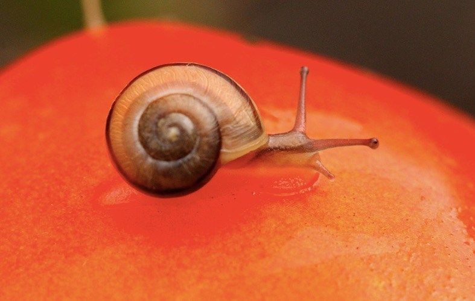

1 Tomato plants can detect an imminent animal attack
Sunny day at the garden, Lady plant tomato is busy with eating the CO2 in the atmosphere but did not pay much attention to the Mr. Snail is getting close. However, there is already a signal transfer from the soil to the Lady plant tomato and calling: the snail is coming, even before any touched occurs from the snail!

This story comes from a recently published paper ( Oecologia) from ecologist John Orrock of the University of Wisconsin–Madison. They squirted snail slime—slippery liquid substances exduated by snails when they slide along—into the soil, and then nearby tomato plants appeared to notice. Tomato plants increased their levels of an enzyme called lipoxygenase, which is known to defense herbivores. From Scientific American: “None of the plants were ever actually attacked,” says John Orrock. “We just gave them cues that suggested an attack was coming, and that was enough to trigger big changes in their chemistry…”
To me, this is a really cool story! I wonder how the tomato plants detected chemicals in snail slime that never actually touched them. As a super fan of mycorrhizal fungi, I cannot help suggesting mycorrhizal fungi or the hyphae network might play a role here. Evidence showed that underground defense signals can carry through common mycelial networks warn neighboring plants of aphid attack and hijacking these networks will affect the herbivore-induced defense signal transfer between tomato plants. If mycorrhizal fungi can directly smell the slime from the snail, even without directly touch the plant itself, the signal will still transfer to the plant by mycorrhizal hyphae already.